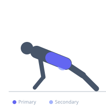
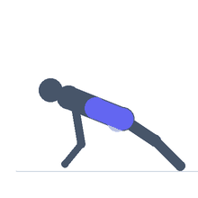

Exercise guide / Side Plank
Side Plank
The side plank is a unilateral isometric core exercise that challenges the obliques and lateral core musculature to resist lateral flexion of the spine. It is an essential anti-lateral flexion movement for complete core stability and is particularly effective at training the quadratus lumborum and lateral hip stabilizers.
Primary muscles
external oblique
internal oblique
Secondary muscles
transverse abdominis
gluteus medius
Stabilizers
erector spinae
Equipment
No Equipment (Bodyweight)


Starting position
- Lie on one side with the forearm on the floor directly below the shoulder. Stack the feet on top of each other. Push up so the body forms a straight line from head to feet.
Setup
- No equipment needed. Use a mat for elbow comfort. Perform on each side for equal time.
Steps
- Push the hips upward off the floor, maintaining the straight line.
- Top arm can rest on the hip or be extended toward the ceiling.
- Hold for the prescribed duration, then switch sides.
Coaching cues
- Push your hips toward the ceiling to maintain the line
- Breathe freely — do not hold your breath during the hold
Breathing
- Breathe normally throughout the hold.
Range of motion
- Isometric hold. Maintain a rigid lateral plank position.
Tempo
- Hold 20–45 seconds per side, progressing over time
Common mistakes
- Allowing the hips to sag toward the floor
- Rotating the torso forward or backward
- Foot placement — stack feet or stagger for balance
Training
- endurance: 2–4 reps
- endurance: 2–4 sets
- Rest: {'endurance': 30}